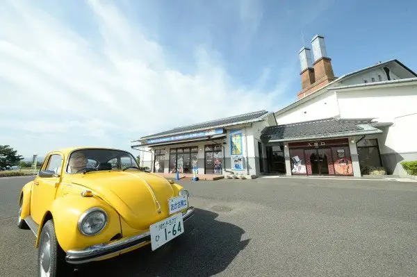
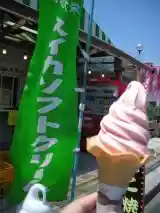
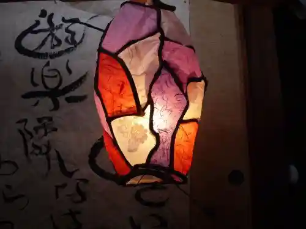
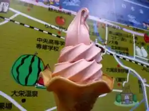

Japan / Tottori / Hokuei
Hokuei, Tottori: things to do, food and stays
Hokuei · Tottori
Hokuei
Highlighted on the Tottori map.

Sights
Aoyama Gosho Furusato Kan
Hokuei, Tottori · 0858-37-5389 · Official / source link
Roadside Station Daiei
Hokuei, Tottori · 0858-37-5451 · Official / source link

Yuraku Tonari Workshop
Hokuei, Tottori · 0858-37-4633 · Official / source link

Suikasofutokuriimu
Hokuei, Tottori · 0858-37-5395 · Official / source link

Hojo Sakyu Furyokuhatsuden Tokoro Fusha Kengaku
Hokuei, Tottori · 0858-36-5568 · Official / source link
Hojo Oto Campground
Hokuei, Tottori · 0858-36-4568 · Official / source link
Hamane Farm
Hokuei, Tottori · 0858-36-4173 · Official / source link
Yura Daiba Ato
Hokuei, Tottori · 0858-36-4309 · Official / source link
Tomi Rei
Hokuei, Tottori · 0858-37-2008 · Official / source link
Hokuei Town Hall
Hokuei, Tottori · 0858-37-3111 · Official / source link